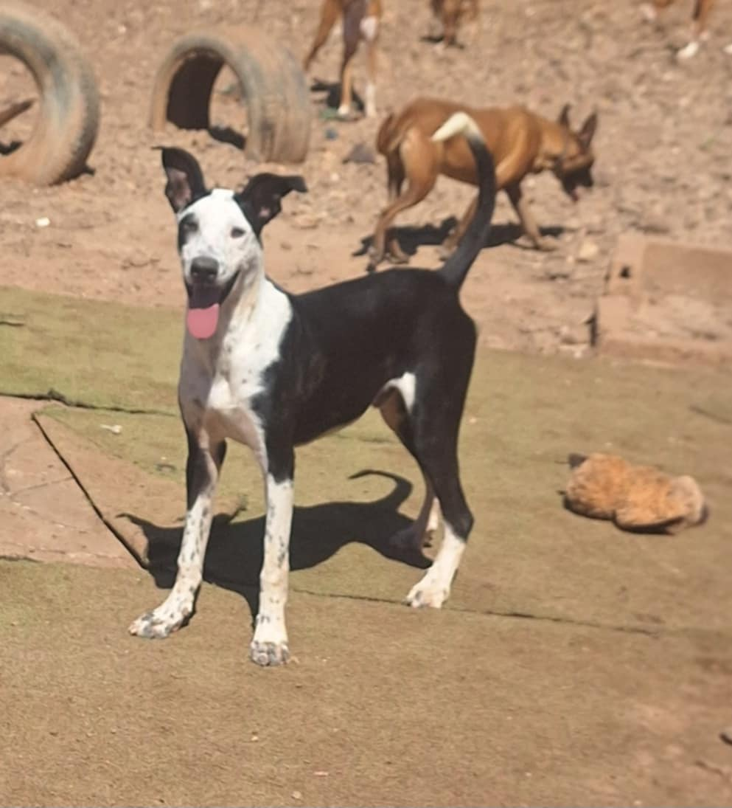
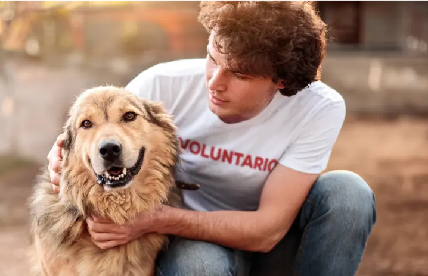

Cada animal merece ser amado. Nosotros estamos aquí para asegurarlo.

"Huellas y Hogar" nació en el año 2015 con un objetivo muy claro: dar voz a los que no la tienen. Lo que comenzó como un pequeño grupo de tres amigos rescatando gatos en un garaje, se ha convertido hoy en un refugio que gestiona más de 200 adopciones al año.
Nuestro equipo está formado por veterinarios, educadores caninos y, sobre todo, voluntarios apasionados que dedican sus fines de semana a pasear, limpiar y dar cariño a nuestros peludos.
Creemos firmemente que cada animal merece una segunda oportunidad, sin importar su edad, raza o pasado.
Desde nuestros inicios
animales adoptados y contando 🐾
Somos una entidad sin ánimo de lucro. Tu aportación cubre vacunas y alimento.
